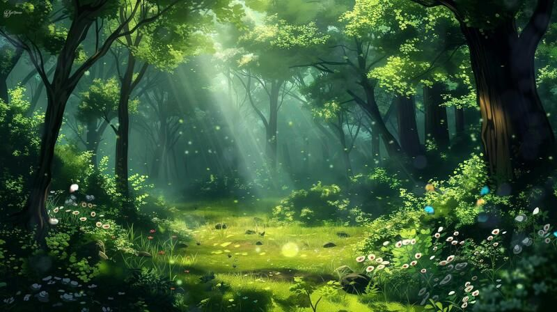
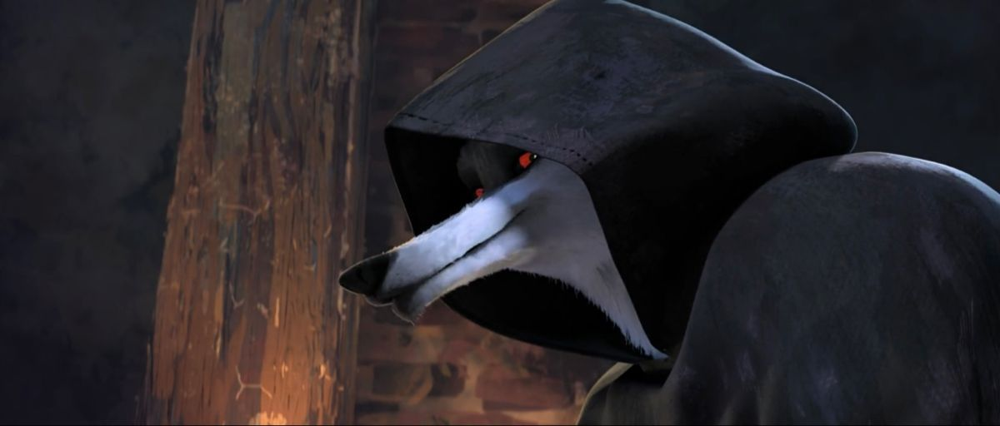
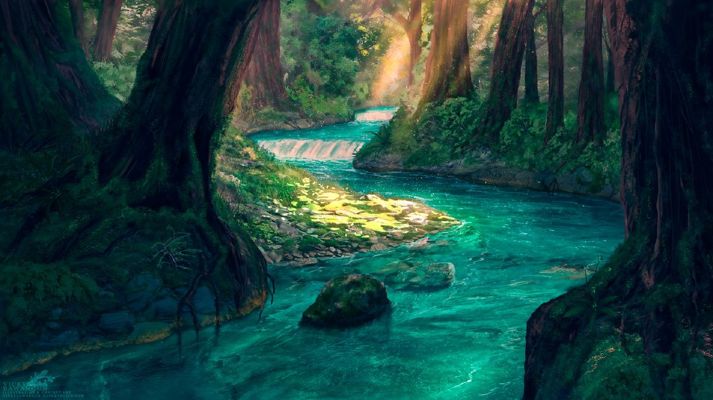
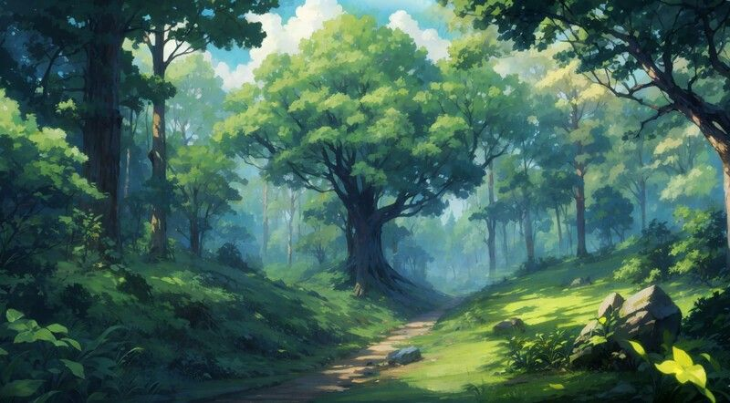
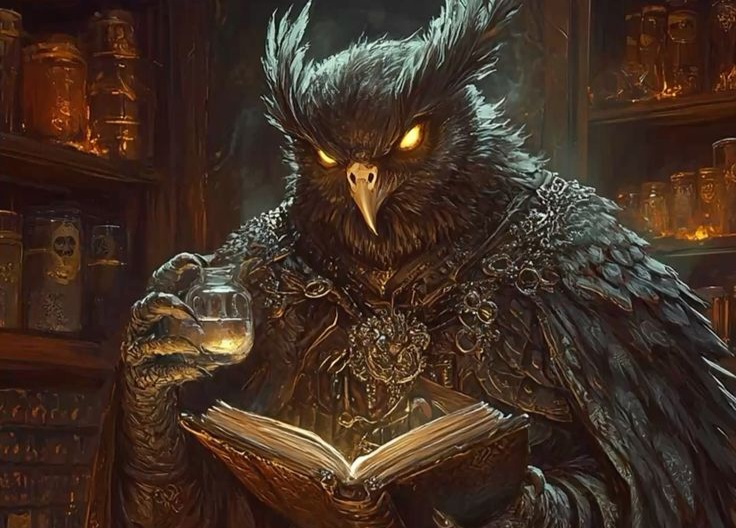
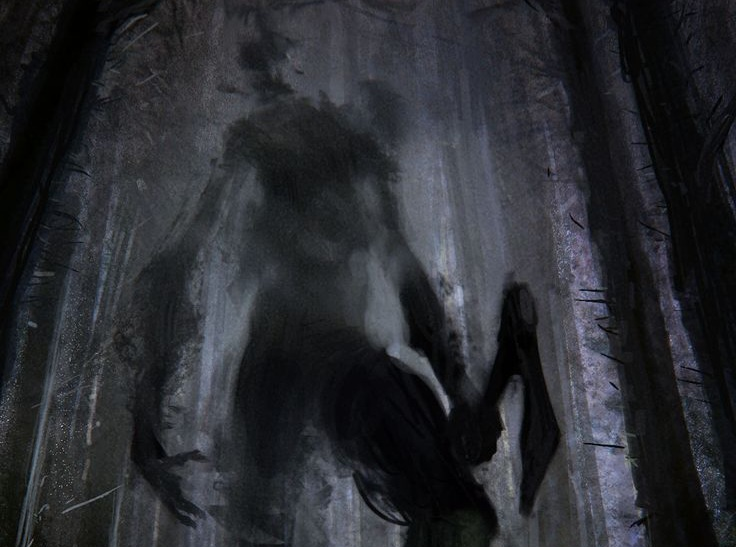
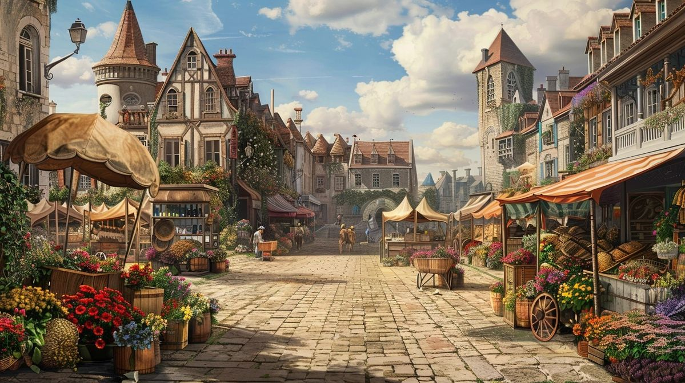
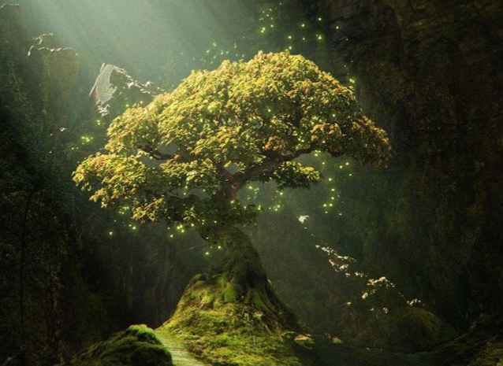

Você é um jovem aventureiro que vive em uma aldeia à beira da misteriosa Floresta dos Ecos. Dizem que a floresta é mágica e cheia de criaturas fantásticas, mas também esconde perigos. Um dia, a aldeia é ameaçada por uma sombra que se aproxima, uma identidade sem forma física, e você deve entrar na floresta para descobrir a origem dessa ameaça e salvar sua casa, amigos e parentes. Você pode escolher entrar pela trilha iluminada, que parece segura, ou pela trilha escura, que é mais rápida, mas cheia de rumores sobre criaturas perigosas.

O jogador encontra um grupo de belas fadas exigentes que oferecem ajuda em troca de um favor. O favor que elas é um item de valor sentimental da aldeia.

Você anda pela floresta e encontra um pequeno bar, entrando nele você encontra Licanus, um lobo falante que oferece um pacto, mas com um preço. O pacto é por Conhecimento Rápido em troca de um Juramento de Dívida futuro. Se o jogador aceitar, ganha uma Pista Secreta e o Vínculo do Lobo (velocidade/ataque), mas fica com um Contador de Dívida.
Você entrega o amuleto. As fadas ficam felizes e oferecem um encantamento de proteção, que pode ser usado para defesa. A líder, com olhos de esmeralda, toca a testa do jogador:"A Sombra é cega para o que é puro e inofensivo. Sua jornada é longa, e seu caminho é tortuoso. Não confie em atalhos que prometem velocidade, pois eles te arrastarão para a Dívida e a Desgraça. O Refúgio de Pedra, onde a Sombra não ousa entrar, está oculto sob o segundo de três riachos gêmeos
Você faz o pacto, e em troca consegue vinculo com o lobo. Ele te da um tipo de enigma sobre como derrotar a sombra. Ele diz sobre um olhar marcante "A Sombra não tem pressa. Ela se alimenta da melancolia e do silêncio dos inocentes. O que ela realmente teme não é a luz do sol, mas o ruído da memória e o fogo da ambição. Em seu caminho, você encontrará três riachos. O terceiro deles te levara mais rapido. Atravesse-o no lugar mais fundo, onde a água deveria estar mais negra, pois o Caminho dos Ecos está logo abaixo"
Você perdeu a oportunidade de conseguir ajuda extra. Mas esta tudo bem, vamos seguir em frente pelos riachos gêmeos.

Você vê os 3 riachos. O primeiro parece raso e facil de atravessar, o segundo parece seguro também e o terceiro parece fundo
Você passou pelo riacho rapidamente, porém foi muito arriscado. E achou uma pedra magica, que pode te ajudar em algum momento. De qualquer jeito, você chega ao outro lado.

Você demorou um pouquinho para passar o riacho, mas fez com segurança. E achou um local seguro pelas proximidades, onde magias maliginas não entram. De qualquer jeito, você chega ao outro lado.
Você passou pelo riacho. de forma simples e segura.

Você passou pelo riacho. Andou por uma pequena trilha e encontra a cabana de uma criatura mística, O Guardião, uma coruja ancestral que guarda um segredo sobre a sombra que ameaça a aldeia. O que você faz?
Você passou pelo riacho. Andou por uma pequena trilha e encontra a cabana de uma criatura mística, O Guardião, uma coruja ancestral que guarda um segredo sobre a sombra que ameaça a aldeia. O que você faz?
Você passou pelo riacho. Andou por uma pequena trilha e encontra a cabana de uma criatura mística, O Guardião, uma coruja ancestral que guarda um segredo sobre a sombra que ameaça a aldeia. O que você faz?
Você passa a localização do local seguro em que esteve, afirmando ser um esconderijo perfeito caso ele precisasse. O preente agradou o Guardião. Com isso ele lhe conta a verdadeira historia da sombra: "O Espírito foi o primeiro Guardião. A aldeia o traiu ao cortar a Árvore Mãe para construir o Portão Principal."
Você ofereceu a pedra magica que agradou muito o Guardião. Com isso ele lhe conta a verdadeira historia da sombra: "O Espírito foi o primeiro Guardião. A aldeia o traiu ao cortar a Árvore Mãe para construir o Portão Principal."
Você não tem nada para oferecer. O guardião não te conta a verdade completa, mas lhe dá uma dica: "A Sombra é a memória de uma promessa quebrada que agora busca seu preço."

A criatura fica irritada e dar uma resposta enigmática e incompleta: "A Sombra é a memória de uma promessa quebrada que agora busca seu preço."

Depois de voltar para a trilha, você da de cara com a sombra que sente-se traído e está a usar o medo para forçar a aldeia a pagar o preço. O que você faz?
Depois de voltar para a trilha, você da de cara com a sombra que sente-se traído e está a usar o medo para forçar a aldeia a pagar o preço. O que você faz?
Risco elevado. É uma batalha difícil que pode danificar irremediavelmente a floresta e a alma do jogador. Requer o Vínculo do Lobo ou o Encantamento das Fadas para ter sucesso. Uma vitória custa caro.
você não tem a verdade completa para isso.
Pedir perdão e oferecer uma Reparação Genuína. Com ajuda das fadas ou do lobo para reconstruir a Árvore Mãe com magia
Com ajuda da magia das fadas. Você derrota a Sombra maligna.
Com ajuda da força do lobo. Você derrota a Sombra maligna.
você não tem ajuda. Infelizmente sozinho você não consegue.

Você volta para casa em paz, pois derrotou a sombra e salvou todos. (final do heroi)

Você fica amiga da Sombra, faz ela não procurar mais a vingança. Quando volta para a aldeia, você ajuda a Sombra a plantar a Árvore Mãe e todos ficam felizes e a paz reina novamente (final pacifico)
Você infelizmente morre para a sombra. Sem conseguir salvar ninguem (final ruim)